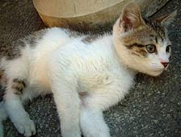

|
■2003/11/10/(Mon)10:23
さば
|

鯖好きです。
しめ鯖はダメなんだけど、お刺身とか焼鯖が好き〜。
関鯖食べたときは感動したなぁ〜。
とゆーわけで、先日も羽田で焼き鯖寿司を買って帰ってきたのだけど…
どーも前々からオカシイなぁ〜…とは思っていたのだけど、どーも鯖を食べると体調崩す模様。
ちみっとだけ食べて、気持ち悪くなったり、ポチポチが出たりして「あーカユカユ。鯖かなぁ〜」とゆー程度で流していたのだけど。
先日１本焼き鯖寿司食べちゃったじゃない。
猛烈な体調降下。
こっから先は尾籠なオハナシなので、すっとばす人はすっ飛ばしてね♪
ゴロゴロゲリゲロダルダルと、濁音のオンパレード。
熱も出てしんどい。
そんななか、出張で大阪まで飛んでいきました。
ちなみに彼氏も鯖好きなので、焼鯖寿司を食べたことを秘密にしてたのだけど、「何かヘンなモン食ったんじゃないのか〜？」と聞かれたので「鯖食べたぁぁ〜」とついつい白状してしまったら、「オレが鯖好きだとゆーのにひとりで食うからや〜」とおこらりてしまいまひた。
|
|
|